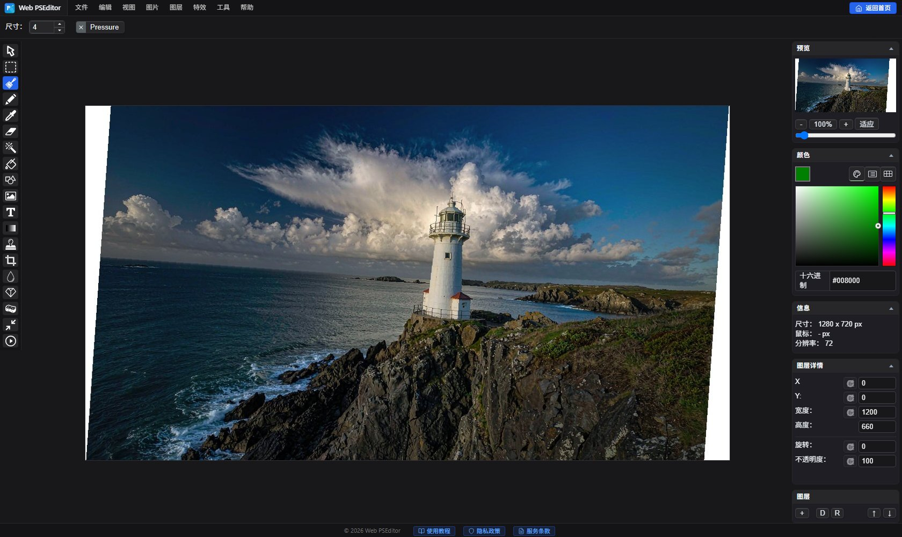

实战教程：裁剪、旋转与矫正歪斜照片
歪斜照片两分钟扶正！
打开 Web PSEditor 矫正 →
裁剪+旋转+矫正一气呵成，本地处理。
水平线歪 2 度，整张照片就「要倒了」；构图边上多了一截垃圾桶，再美的风景也扣分。别急着删——裁剪、旋转、矫正三步就能让歪斜照片起死回生，全程用 Web PSEditor 在本地完成。
先看效果：矫正前 vs 矫正后
操作步骤

第一步：先旋转扶正
打开照片，点击 【图像】→【旋转】 做 90° 大旋转；小角度歪斜则用 【编辑】→【自由变换】 精细调整角度（本例约 4°）。旋转后会露出白边，下一步裁掉。
第二步：裁剪收构图
选择 裁剪工具，沿着照片内容边缘裁掉白边，顺便把画面边缘的干扰物（行人、杂物）一并裁掉。主体放在三分线上，画面立刻专业。
第三步：检查水平线
放大看建筑边缘或地平线是否水平。差一点点就再微调 0.5°——歪 1° 看不出来，歪 3° 全图都倒。
第四步：导出
确认后 【文件】→【另存为】 导出。翻拍的文档和扫描件建议存 JPG 质量 90 以上，文字更清晰。
💡 矫正口诀：先大角度旋转、再小角度微调、最后裁剪收边——顺序反了会白白损失画质。
相关教程推荐
🎯
动手实操练习
纯本地运算
打开编辑器，把你拍歪的照片扶正试试，废片也能救回来。